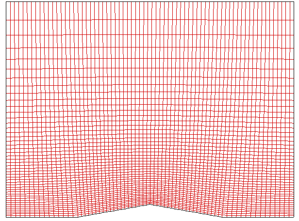
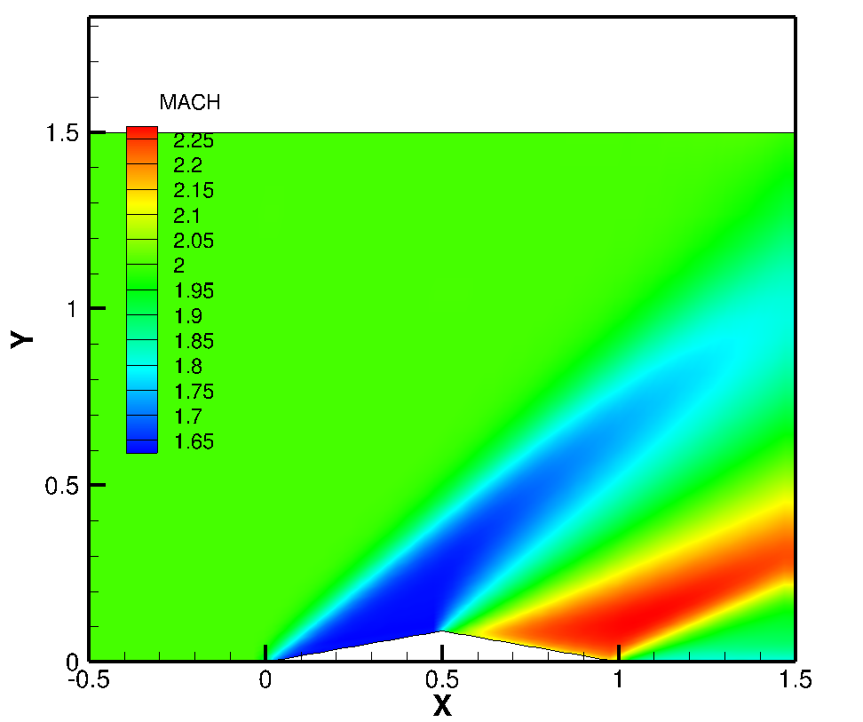
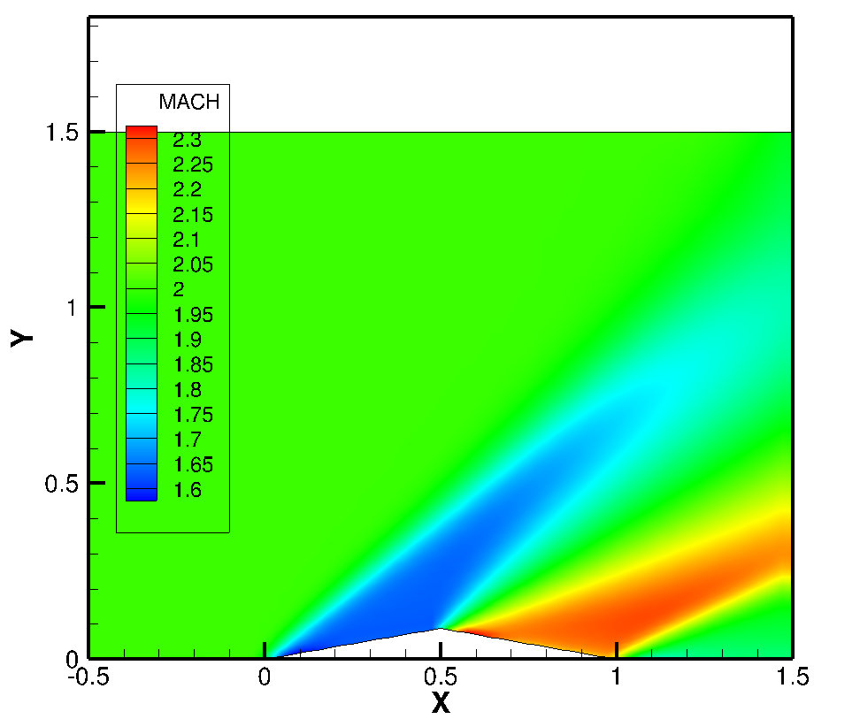
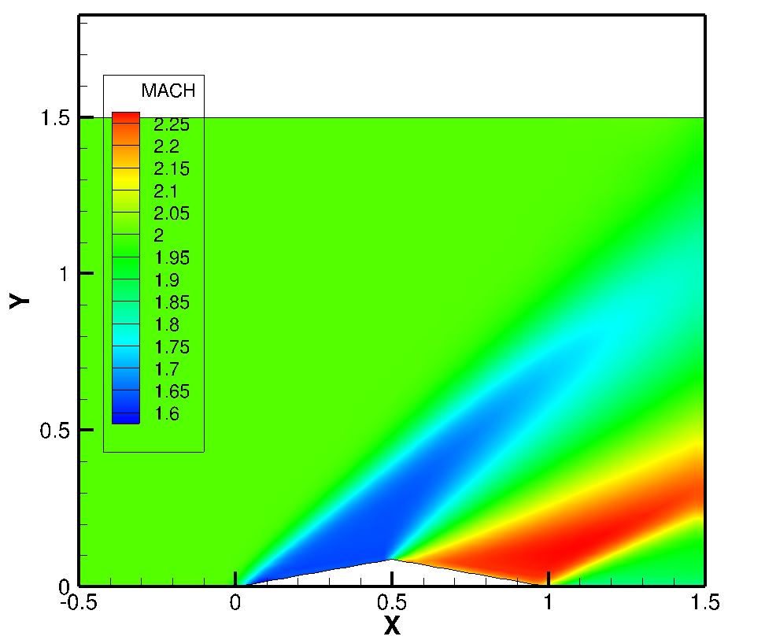
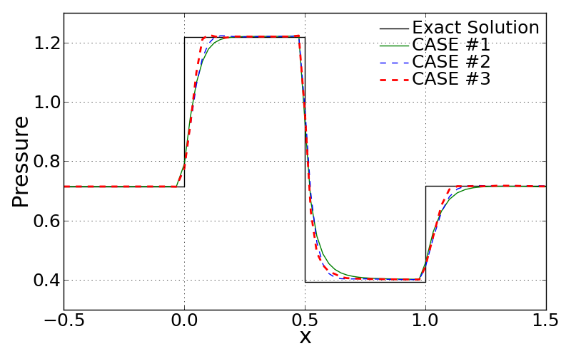
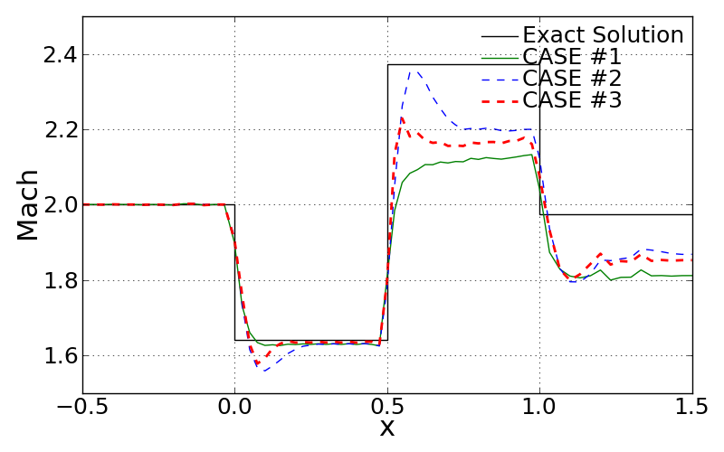
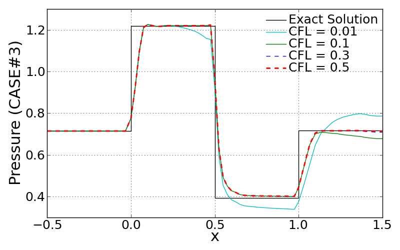
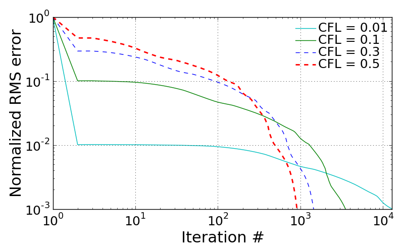
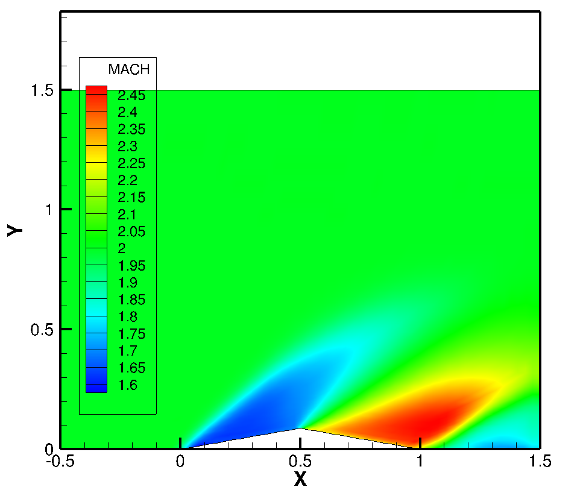

The grid used in this project has a resolution of 71 X 48 in i- and j-directions as shown below. In this project, unsteady 2-dimensional Euler solution is being resolved by performing the explicit time-integration with AUSMPW+ flux-splitting scheme.
<Computational grid>
The first case in this project was set to run with first order accurate with CFL = 0.8. Since this setup employs the first order accuracy, the MUSCL differencing uses neighborting one points from either left or right point. For this setup, \(\epsilon\) was set to zero in the MUSCL diferencing extrapolation equations in ‘Numerical Method’ section.
The figure shown below illustrates the fully developed flow field around the airfoil in terms of Mach number. Incoming supersonic flow with Mach = 2 meets the oblique shock so that the flow experiences dramatic change in Mach number. After the flow goes over the top edge of the airfoil, the Mach number goes up again and finally leads to the similar level of Mach number with incoming flow beyond the trailing edge.
As observed near at the top edge, shock surface (Prandtl-Meyer fan) seems to form further downstream than expected theoretically.
<CASE1: Mach number contour plot>
The second trial for this project is made for running the Euler solver with higher order accurate MUSCL differencing. In this case, by setting \(\varphi\) to 1 and \(\kappa\) to -1, the scheme yields 2nd order accurate, fully upwind differencing.
Since multiple trials with different CFL number gives limitation of CFL number use for this case, the second case was running with CFL = 0.7. Maximum CFL number criterion will be discussed later. Compared to the first case, the Prandtl-Meyer shock formation seems to be attached more close to the top edge. Thus, it can be conlcuded that the higher accurate scheme is more likely to properly predict the shock formation.
<CASE2: Mach number contour plot>
For the final case running, the second order accurate with minmod limiter is employed to introduce the TVD (Total Variation Diminishing) scheme. The figure shown below is the result of Mach number calculated from the CASE #3. This looks qualitatively same as the second result.
<CASE3: Mach number contour plot>
In this section, three different cases introduced above are compared in terms of convergency and calculated pressure along the bottom wall. The figure shown below illustrates the time history of RMS errors for different cases. The quantitative comparison is made in the table in terms of computational time and required iteration number for convergence. For those cases, the CASE #3 results in the heaviest computational cost. This is because 2nd order accurate needs one more neighboring points to extrapolate every interior points and moreover ‘minmod’ calculation should be added. The CASE #2 shows the irregular pattern of RMS error around \(10^{2}\) iterations level. However, this is confirmed to disappear if the lower CFL number is employed for this case.
The table shown below also tells about applicable maximum CFL number limit for each cases. These numbers were achieved by experimenting the various number of CFL cases.
<Comparison of RMS history for three different cases>
| CPU time (sec) | Iternation # for convergence | Max. CFL to be stable | |
| CASE #1 | 1.78388 | 583 | 1.2 |
| CASE #2 | 1.93979 | 637 | 0.8 |
| CASE #3 | 2.74088 | 664 | 0.75 |
<Table: required CPU time, total number of iterations, and maximum CFL number>
The quantitative comparison for three different cases with exact invicid solution is made as shown below. The first figure shows the pressure development along the bottom wall. The 2DEuler solver seems to properly follow the theretically resolved solution. However, there is a little difference around the region that shock surface forms.
All three cases are somewhat limited to capture the shock surface that brings the infinitesimally small region of sudden pressure change. The first reason of this is because of the limited grid resolution around the shock surface. The second possible reason is that the dissipative errors of the current scheme may lead to smear the high gradient out.
On the other hand, we can find quite meaningful difference between those different cases. The comparison proves that the second order accurate is more likely to follow the high gradient in shock. The more enhanced achievement can be made with the greater resolution of the employed grid.
<Comparison of pressure along the wall>
From the comparison of Mach number distribution along the bottom wall, very noticible dispersion errors of second order accurate scheme can be found. When it comes to the TVD scheme, CASE #3 shows the more effective diminishing dispersion compared to the CASE #2 because it adapts the limited extrapolated state vector by using the slope limiter function as defined earlier.
<Comparison of Mach number along the wall>
Following figures show the effect of employed CFL number in CASE #3. Since the time-step for every iteration is determined on the basis of CFL number, grid size, local contravariant velocities and speed of sound, the effect of CFL number on computational time and convergence history is quite noticible. All these test cases were converged within a same level of RMS limit, which is earlier defined.
<Effect of CFL number on converged pressure distribution>
<Effect of CFL number on RMS history>
As noticed from below, the smaller CFL number is, the more far solution is obtained away from the exact solution. The required iteration number gets bigger as CFL number decreases. This is simply because less CFL number reduces the time step and it then results in less change in state vector in every time step. Thus, smaller CFL number case may not be able to show the fully developed steady flow. This is the main reason why the case of CFL = 0.01 shows the far pressure away especially beyond the half of air foil. This can be clearly observed by looking at below two snapshots obtained at the same RMS limit (but at different iteration number).
<Mach number contour for CFL = 0.01>
{kind=link}
{kind=link}
{kind=link}
{kind=link}
{kind=link}
{kind=link}
{kind=link}
{kind=link}
{kind=link}
{kind=link}